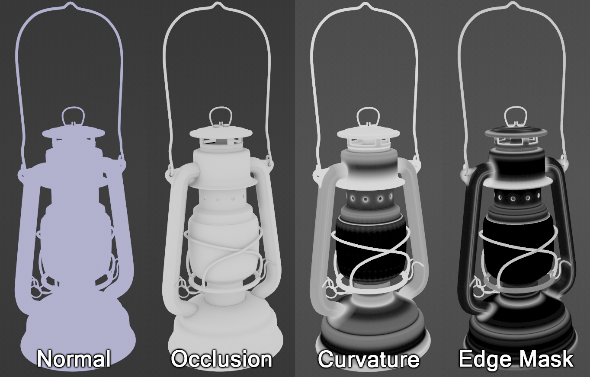
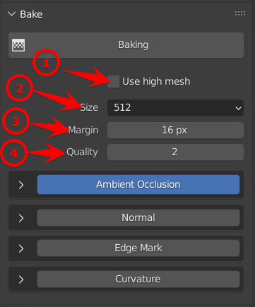
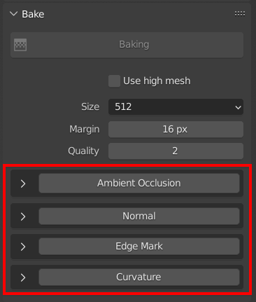
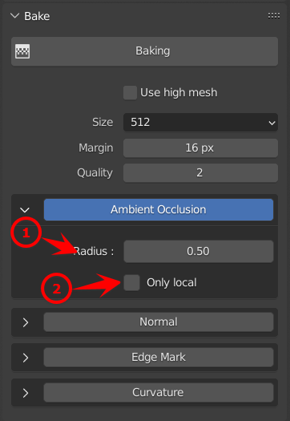
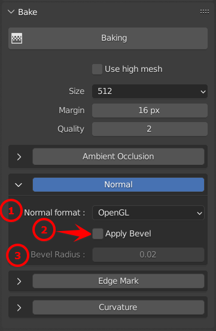
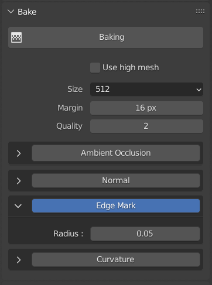
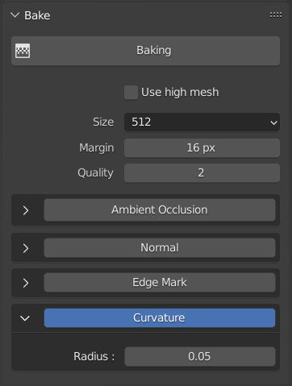

Baking

Baking refer to the action of transferrin mesh based information into textures. These information are then read by Philogix PBR Painter to perform advanced effects. Smart Materials and Smart Surfaces rely on them for example.
General settings

1. Use high mesh
If enabled, the high-poly mesh list provided to the bakers will be ignored and the low-poly mesh will be baked on itself instead.
This parameter is useful when working with a high-poly mesh directly. For example, when baking an ambient occlusion texture for a high-poly car with this setting enabled, the ray distance is ignored and the baker will produce a perfect bake (no ray misses or geometry mismatch).
2. Size
Control the baking output texture resolution (in pixels).
3. Margin
Margin is a process that happens after the generation of a texture. Its purpose is to dilate the borders of the UV islands to fill empty areas with similar pixels.
4. Quality
Parameters "Quality" control the texture quality. High quality values provide a better filtering but can result in a loss of performances. This setting controls the amount of samples per pixel.
Baker List

If it is checked it will enable this baking for the baking process
1. Ambient Occlusion

The Ambient Occlusion baker allows to bake an ambient shadow texture.
- Radius: Distance up to which other objects are considered to occlude the shading point. Default is 0.5
- Only local: Only detect occlusion from the object itself, and not others.
2. Normal

The Normal Map from mesh baker allows you to create a tangent space or world space normal map from a high poly mesh.
- Normal Format: Defines the format of the normal texture if the map type parameter is set to Tangent Space.
- Apply Bevel: Render rounded corners and apply to Normal map.
- Bevel Radius: Width of the bevel effect on edges.
3. Edge mask

The Edge mask baker allows to extract a edge texture. This texture contains cavities and edges information related to the geometry.
- Radius: Distance up to which other objects are considered to edge the shading point. Default is 0.05
4. Curvature

The Curvature baker allows to extract a curvature texture. This texture contains cavities and edges information related to the geometry.
- Radius: Distance up to which other objects are considered to curvature the shading point. Default is 0.05